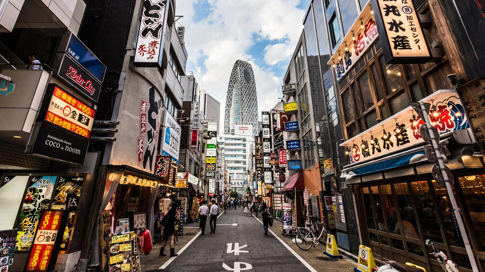

About Tokyo
Tokyo is the capital city of Japan and one of the most vibrant and exciting metropolises in the world. It is known for its modern skyscrapers, historic temples, bustling markets, and diverse cultural attractions.
Explore the unique blend of traditional and contemporary Japan in Tokyo, from the serene gardens of the Imperial Palace to the lively districts of Shibuya and Shinjuku.